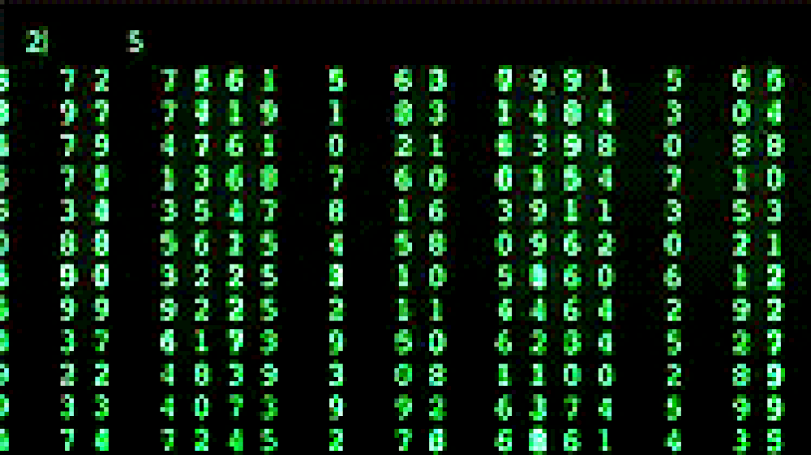

Apaixonados pela TI

Página principal
Site dedicado a assuntos e tutorias de TI.
Se você gosta de assuntos sobre tecnologias, progamação ou está com duvida em algum exercício, está no lugar certo.
Aqui será abordado assuntos diverso da area de TI, em forma de matérias, videos e podcasts.